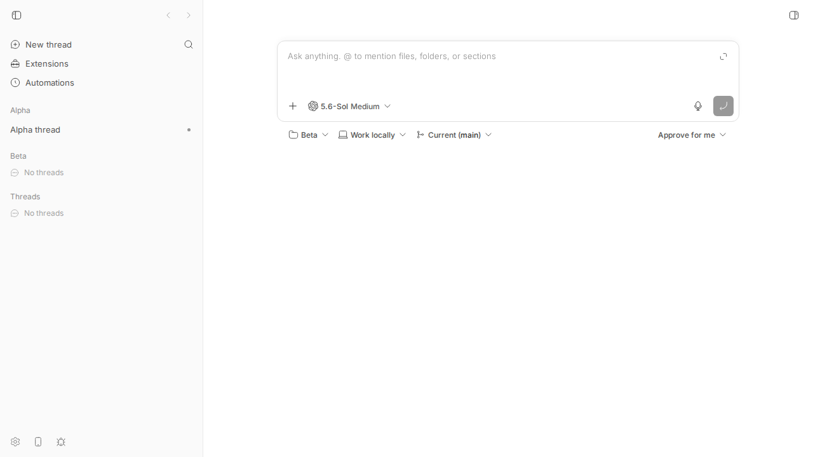
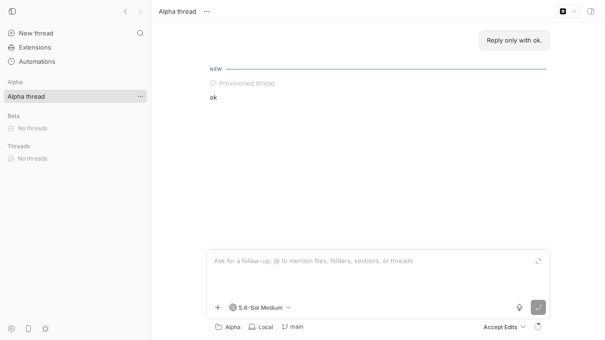
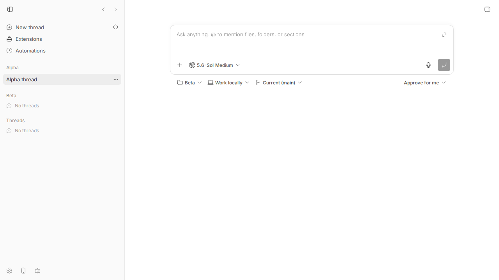
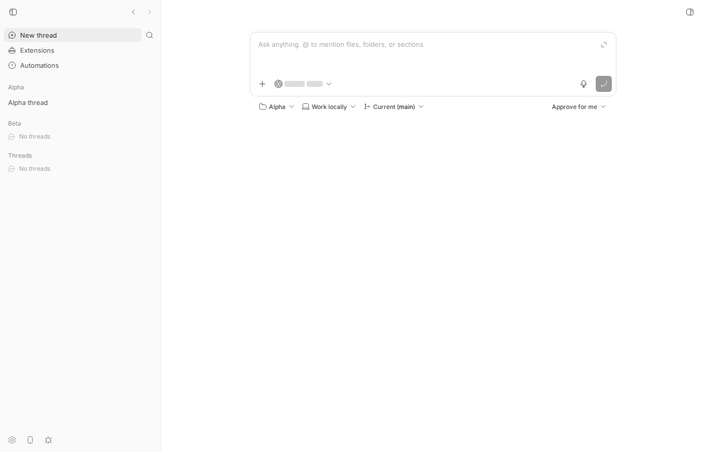

#1618 · Use the active project for Command+N thread creation
TL;DR
What the user sees. You have the composer's project picker set to project Beta (from the last thread you started). You open a thread that lives in project Alpha, press the "New thread" shortcut (Cmd+N on desktop, Ctrl/Cmd+Shift+O in a browser, or the desktop File → New thread menu). The composer opens with Beta selected, not Alpha. If you type and send without looking at the picker, the thread is created in the wrong project.
What is actually going on. The composer's project is a single browser-local preference (localStorage["bb.root-compose.project-id"], a Jotai atomWithStorage). The thread.new command handler in AppLayout just navigates to / with focusPrompt; it never touches that preference. So the composer always shows whichever project you last picked/started a thread in. This is not an accident: PR #458 ("keep composer project sticky to last prompt", 2026-07-01) deliberately removed the code that synced the preference to the open thread, and its test AppLayout.root-compose-project.test.tsx guards that. The sidebar "New thread" button behaves identically.
Why it matters / caveat. The command's own metadata describes it as "Start a thread in the active project" (app-command-metadata.ts), which the behaviour contradicts, so the request is coherent. But the issue and PR were both filed by the same agent with no user report behind them, and the fix reverses part of a deliberate earlier product decision, so a maintainer should decide the intended policy first. Linked PR #1629 implements the change for the shortcut only, leaving the sidebar button (which advertises the very same shortcut) on the old behaviour: after the PR, clicking the button and pressing its shortcut open the composer in different projects.
Claims vs findings
| Claim (from issue / PR) | Status | Evidence |
|---|---|---|
| "The current command opens the composer with its last stored project." | Verified | Live repro on 16ceb3a54: composer set to Beta → open Alpha thread → Ctrl+Shift+O → composer shows Beta (screenshot 3, script 02). Unit repro test fails on base with expected 'proj_last_run' to be 'proj_opened'. |
| "This can create a thread in a different project from the active thread." | Verified (by construction) | RootComposeView passes rootComposeProjectId straight into NewThreadComposer and submits with it; a Send at that point targets Beta. Not exercised end-to-end (would spend a provider turn for no new information). |
| "Command+N should select that thread's project" (i.e. this is a bug) | Product decision, not verifiable | Contradicts PR #458 which intentionally made the composer project sticky and removed the thread→preference sync. Supports: command description says "Start a thread in the active project" (app-command-metadata.ts#L31-L35). No user report exists; issue is agent-filed alongside its PR. |
| PR: "Routes without an active project keep the stored selection." | Verified | PR test "keeps the stored project when the route has no project" passes; on / useRouteState().projectId is undefined. Note: projectless thread routes (/threads/:id) yield proj_personal and do overwrite the stored project with "no project" — reasonable but not stated in the PR. |
| PR: "Focused Vitest file: 2 tests passed", typecheck OK | Verified | Cherry-picked onto 16ceb3a54: 2 PR tests + my repro test pass; turbo run typecheck --filter=@bb/app passes; all 44 tests under components/layout pass. |
| Implicit: "Command+N" is the trigger | Partly | Mod+N is bound desktop-only (browsers reserve it); web clients use Mod+Shift+O (apps/server/src/services/system/app-keybindings.ts#L137-L143). Both, and the desktop menu item, dispatch the same thread.new command, so the finding applies to all three. |
Environment
- bb
16ceb3a54(main, 2026-08-18), worktree/home/sawyer/projects/bb/.claude/worktrees/wf_242c3e11-a10-42. Dev instance: apphttp://localhost:18907, serverhttp://localhost:26907, host daemon:34907, data dir/home/sawyer/.bb-dev/projects-bb-.claude-worktrees-wf_242c3e11-a10-42-1787cd634543. - Linux 7.0.0-29-generic (x86_64), node v24.18.0, codex-cli 0.147.0 (used only to spawn one thread so a project had something to open). Headless Chromium via
dev-browser. - Projects:
proj_j7n7ute45x"Alpha" (/tmp/bb-1618/alpha),proj_d45ubiyhnd"Beta" (/tmp/bb-1618/beta); threadthr_p4ditwufhhin Alpha. - PR #1629 head
a43d39524(based onbc4b05b86, 43 commits behind main); cherry-picked cleanly onto16ceb3a54for testing. Diff: 1618/pr1629.diff.
Minimal reproduction
A. Live, in the browser (what a user does)
- Build and start a dev instance:
pnpm install --frozen-lockfile --prefer-offline && pnpm exec turbo run build && scripts/bb-dev-app current. Note the App and Server URLs it prints. - Create two projects and one thread in the first one (replace host id from
bb machine list; the spawn costs one tiny provider turn):curl -s -X POST $BB_SERVER_URL/api/v1/projects -H 'content-type: application/json' \ -d '{"name":"Alpha","source":{"type":"local_path","path":"/tmp/bb-1618/alpha","hostId":"host_vebrd9ryct"}}' curl -s -X POST $BB_SERVER_URL/api/v1/projects -H 'content-type: application/json' \ -d '{"name":"Beta","source":{"type":"local_path","path":"/tmp/bb-1618/beta","hostId":"host_vebrd9ryct"}}' pnpm bb:dev thread spawn --project proj_j7n7ute45x --provider codex --permission-mode accept-edits \ --title "Alpha thread" --prompt "Reply only with ok." --json - In the app: click sidebar New thread, open the project picker ("Work in a project") and choose Beta. This writes
localStorage["bb.root-compose.project-id"] = "proj_d45ubiyhnd". (script 01) - Click Alpha thread in the sidebar (URL becomes
/projects/proj_j7n7ute45x/threads/thr_p4ditwufhh). - Press Ctrl+Shift+O (web binding of
thread.new; Cmd+N in the desktop app). (script 02)
Expected (per issue): composer opens on / with project Alpha selected.
Actual:
thread url: http://localhost:18907/projects/proj_j7n7ute45x/threads/thr_p4ditwufhh after shortcut url: http://localhost:18907/ composer project: Beta stored: proj_d45ubiyhnd


/projects/proj_j7n7ute45x/threads/….
/ but the project chip still reads Beta, not Alpha. Sending now would create the thread in Beta.B. Unit-level (fails on base, passes with PR #1629)
File: 1618/repro/AppLayout.thread-new-active-project.repro.test.tsx. Copy it to apps/app/src/components/layout/ and run cd apps/app && pnpm exec vitest run src/components/layout/AppLayout.thread-new-active-project.repro.test.tsx. Lines 1–143 are the mock scaffold copied verbatim from the existing AppLayout.root-compose-project.test.tsx; the new part mocks AppCommandProvider to capture the thread.new handler, renders AppLayout on a thread route of proj_opened with proj_last_run stored, invokes the handler, and asserts the stored project became proj_opened.
Result on 16ceb3a54 (full log: repro-test-base.log) — the last assertion fails; the earlier assertion (opening a thread alone leaves the preference untouched, PR #458's guard) passes:
❯ src/components/layout/AppLayout.thread-new-active-project.repro.test.tsx (1 test | 1 failed) 63ms
× opens the composer in the project of the thread that is open 62ms
⎯⎯⎯⎯⎯⎯⎯ Failed Tests 1 ⎯⎯⎯⎯⎯⎯⎯
FAIL src/components/layout/AppLayout.thread-new-active-project.repro.test.tsx > #1618 thread.new command vs active project > opens the composer in the project of the thread that is open
AssertionError: expected 'proj_last_run' to be 'proj_opened' // Object.is equality
Expected: "proj_opened"
Received: "proj_last_run"
❯ src/components/layout/AppLayout.thread-new-active-project.repro.test.tsx:231:7
229| expect(
230| window.localStorage.getItem(ROOT_COMPOSE_PROJECT_ID_STORAGE_KEY),
231| ).toBe("proj_opened");
| ^
232| });
Repro test source (inline)
// @vitest-environment jsdom
import { act, cleanup, render, waitFor } from "@testing-library/react";
import type { ReactNode } from "react";
import { MemoryRouter } from "react-router-dom";
import { afterEach, beforeEach, describe, expect, it, vi } from "vitest";
import { AppLayout } from "./AppLayout";
const ROOT_COMPOSE_PROJECT_ID_STORAGE_KEY = "bb.root-compose.project-id";
const mockUseThread = vi.hoisted(() => vi.fn());
const mockUseThreadDetailBootstrap = vi.hoisted(() => vi.fn());
vi.mock("@/components/sidebar/AppSidebar", () => ({
AppSidebar: () => <aside data-testid="app-sidebar" />,
}));
vi.mock("@/hooks/useThreadSplitsEnabled", () => ({
useThreadSplitsEnabled: () => false,
}));
vi.mock("@/hooks/queries/system-queries", () => ({
useSystemConfig: () => ({
data: {
experiments: {
claudeCodeMockCliTraffic: false,
editMessages: false,
newOnboarding: false,
providerSessionReaping: false,
},
},
}),
}));
vi.mock("@/components/project/ProjectActionsProvider", () => ({
ProjectActionsProvider: ({ children }: { children: ReactNode }) => (
<>{children}</>
),
}));
vi.mock("@/components/thread/ThreadActionsProvider", () => ({
ThreadActionsProvider: ({ children }: { children: ReactNode }) => (
<>{children}</>
),
}));
vi.mock("@/components/dialogs/ProjectPathDialog", () => ({
ProjectPathDialog: () => null,
}));
vi.mock("./AppPageHeader", () => ({
HEADER_ICON_BUTTON_CLASS: "header-icon-button",
AppPageHeader: ({
center,
actions,
}: {
center?: ReactNode;
actions?: ReactNode;
}) => (
<header>
{center}
{actions}
</header>
),
}));
vi.mock("@/lib/iframe-drag-guard", () => ({
IframeDragGuardOverlay: () => null,
}));
vi.mock("@/lib/bb-desktop", () => ({
BROWSER_SIDEBAR_TRIGGER_INSET_CLASS: "",
CHROME_ROW_CLASS: "",
DEFAULT_DESKTOP_WINDOW_STATE: { isFullScreen: false },
MACOS_CHROME_CONTROL_AXIS_CLASS: "",
MACOS_CHROME_CONTROL_NO_DRAG_CLASS: "",
MACOS_CHROME_TRAFFIC_LIGHT_AXIS_NUDGE_CLASS: "",
MACOS_TRAFFIC_LIGHT_RESERVE_OFFSET_CLASS: "",
MACOS_WINDOW_DRAG_CLASS: "",
MACOS_WINDOW_NO_DRAG_CLASS: "",
getBbDesktopInfo: () => null,
shouldReserveMacosTrafficLights: () => false,
shouldUseMacosDesktopChrome: () => false,
}));
vi.mock("@/lib/favicon-color-preference", () => ({
useFaviconBadge: vi.fn(),
}));
vi.mock("@/hooks/useQuickCreateProject", () => ({
useQuickCreateProjectController: () => ({
hostId: null,
hostName: null,
isCreating: false,
platform: "darwin",
projectPathDialog: {
onOpenChange: vi.fn(),
target: null,
},
submitProjectPath: vi.fn(),
}),
}));
vi.mock("@/hooks/queries/sidebar-navigation-query", () => ({
useSidebarNavigation: () => ({
data: {
sections: [],
personalProject: {
id: "proj_personal",
kind: "personal",
name: "Personal",
sources: [],
threads: [],
defaultExecutionOptions: null,
createdAt: 1,
updatedAt: 1,
},
projects: [
{
id: "proj_opened",
kind: "standard",
name: "Opened Project",
sources: [],
threads: [],
defaultExecutionOptions: null,
createdAt: 1,
updatedAt: 1,
},
],
},
isError: false,
isSuccess: true,
}),
}));
vi.mock("@/hooks/queries/thread-queries", () => ({
didThreadDetailBootstrapRefreshAfterMount: () => true,
useThread: (...args: unknown[]) => mockUseThread(...args),
useThreadDetailBootstrap: (...args: unknown[]) =>
mockUseThreadDetailBootstrap(...args),
useThreadPendingInteractions: () => ({ data: undefined }),
getLatestPendingInteraction: () => null,
}));
// ---------------------------------------------------------------------------
// Repro for get-bb/bb#1618. Everything above this line is the mock scaffold
// copied verbatim from AppLayout.root-compose-project.test.tsx; only the mock
// of AppCommandProvider (below) and the test body are new.
//
// The `thread.new` app command (Cmd+N on desktop, Ctrl/Cmd+Shift+O on the web,
// desktop menu "New thread") opens the root composer with whatever project was
// last stored in localStorage instead of the project of the thread that is
// currently open. On base commit 16ceb3a54 the LAST assertion FAILS because
// the stored value stays "proj_last_run" while the open route belongs to
// "proj_opened".
// ---------------------------------------------------------------------------
const commandHandlers = vi.hoisted(() => new Map<string, () => boolean>());
vi.mock("@/components/commands/AppCommandProvider", () => ({
useAppCommandHandler: (command: string, handler: () => boolean) => {
commandHandlers.set(command, handler);
},
useAppCommandShortcut: () => null,
useIsAppCommandModifierHeld: () => false,
}));
describe("#1618 thread.new command vs active project", () => {
beforeEach(() => {
window.localStorage.clear();
commandHandlers.clear();
mockUseThread.mockReturnValue({
data: {
id: "thr_opened",
projectId: "proj_opened",
title: "Opened Thread",
titleFallback: "Opened Thread",
lastReadAt: 100,
latestAttentionAt: 100,
},
});
mockUseThreadDetailBootstrap.mockReturnValue({
isError: false,
isSuccess: true,
});
});
afterEach(() => {
cleanup();
window.localStorage.clear();
commandHandlers.clear();
vi.clearAllMocks();
});
it("opens the composer in the project of the thread that is open", async () => {
// A previous session left the composer on another project.
window.localStorage.setItem(
ROOT_COMPOSE_PROJECT_ID_STORAGE_KEY,
"proj_last_run",
);
render(
<MemoryRouter
initialEntries={["/projects/proj_opened/threads/thr_opened"]}
>
<AppLayout>
<div>Thread route</div>
</AppLayout>
</MemoryRouter>,
);
await waitFor(() => {
expect(document.title).toBe("Opened Thread");
});
// Merely opening the thread must not touch the preference (PR #458 kept
// the composer project sticky to the last prompt).
expect(
window.localStorage.getItem(ROOT_COMPOSE_PROJECT_ID_STORAGE_KEY),
).toBe("proj_last_run");
// Simulate Cmd+N / Ctrl+Shift+O / desktop menu "New thread".
act(() => {
expect(commandHandlers.get("thread.new")?.()).toBe(true);
});
// Expected (issue #1618): the composer should target the open thread's
// project. Actual on 16ceb3a54: still "proj_last_run".
expect(
window.localStorage.getItem(ROOT_COMPOSE_PROJECT_ID_STORAGE_KEY),
).toBe("proj_opened");
});
});
Root cause
Mechanism. The composer's project is a global browser preference, not derived from the route. rootComposeProjectIdAtom is an atomWithStorage keyed bb.root-compose.project-id, defaulting to PERSONAL_PROJECT_ID (root-compose-selection.ts#L20-L25). RootComposeView reads it and hands it to the composer as its project (RootComposeView.tsx#L635-L636, #L727-L729). The only writers are the picker itself, fork/hand-off seeds, useCreateThreadInWorktree, the per-project "+" (LegacyProjectComposeRedirect) and a sync-back effect in RootComposeSurface.
The thread.new handler is route-agnostic: it only navigates (AppLayout.tsx#L483-L488):
useAppCommandHandler("thread.new", () => {
void navigate(getRootComposeRoutePath(), {
state: { focusPrompt: true },
});
return true;
});
Nothing between the key press and the composer mount consults useRouteState().projectId, so the composer shows the stored project. The sidebar button (AppSidebar.tsx#L149-L154) does exactly the same navigate. Desktop New thread menu → sendToApplicationRenderer(..., "thread.new") (main.ts#L699-L707) reaches the same handler.
Why it is like this (history). Before 2026-07-01 AppLayout had useEffect(() => { if (thread?.projectId) setRootComposeProjectId(thread.projectId) }), i.e. opening any thread moved the composer to that project. PR #458 (d2d6092c5, "fix(app): keep composer project sticky to last prompt") removed that effect and the equivalent on thread deletion, and added AppLayout.root-compose-project.test.tsx whose single test is literally "does not replace the new-thread project preference with the opened thread project". So the current behaviour is an explicit product choice ("composer remembers where you last prompted"), and #1618 asks to carve out an exception for the New-thread command. The two intents are documented inconsistently: the command palette metadata says "Start a thread in the active project" (app-command-metadata.ts#L31-L35) while the code implements "last used project".
Deeper issue. "New thread" has one label, one shortcut hint and three entry points (shortcut, desktop menu, sidebar button) but the project policy lives in each caller rather than in one place. Any fix that changes only one caller (as #1629 does) creates divergent behaviour between a button and the shortcut printed on that very button.
Proposed fix (first principles)
First, a maintainer should decide the policy: (a) keep #458's "sticky to last prompt" everywhere and fix the command description, or (b) "New thread targets the active route's project when there is one, else the last-used project". Assuming (b), which matches the metadata and the issue:
- Add one hook, e.g.
useOpenNewThreadComposer()inapps/app/src/hooks/, that readsuseRouteState().projectId, callssetRootComposeProjectId(projectId)when it is defined, thennavigate(getRootComposeRoutePath(), { state: { focusPrompt: true } }). Use it from both thethread.newhandler inAppLayout.tsxandhandleNewChatinAppSidebar.tsx(and any other generic "new thread" caller such asToolsView/SettingsViewif they are meant to be generic). - Decide explicitly what a projectless thread route (
/threads/:id,projectId === "proj_personal") should do: switching the composer to "Work in a project = none" is consistent with (b) but is a visible change; document it in the test. - Update
AppLayout.root-compose-project.test.tsxto keep the #458 guard (opening a thread alone does not change the preference) and add the command case, so both halves of the policy are pinned. - Update the shortcut/command description if needed and the CLI/guide surfaces are unaffected (UI-only preference).
Risk: users who rely on the sticky behaviour (start threads in project X while reading threads in project Y) lose it whenever they use the shortcut from a thread; that is precisely the trade-off #458 vs #1618, hence "decide first". No server/daemon change and no protocol bump involved.
PR review
#1629 · Use the active project for Command+N thread creation — verdict: REQUEST CHANGES
What it changes. apps/app/src/components/layout/AppLayout.tsx: hoists the useRouteState() destructure above the command handlers, imports useSetRootComposeProjectId, and in the thread.new handler calls setRootComposeProjectId(projectId) when projectId !== undefined before navigating. AppLayout.root-compose-project.test.tsx: mocks @/components/commands/AppCommandProvider to capture handlers, rewrites the existing test into "uses the opened thread project for the new-thread command", adds "keeps the stored project when the route has no project". 55+/10−, no server, daemon or contract changes (no protocol bump needed).
Does it address the root cause? For the shortcut/menu path, yes: it sets the atom the composer reads, at the moment the command fires; verified live via HMR on the cherry-picked branch — after Ctrl+Shift+O from the Alpha thread the composer shows Alpha and localStorage holds proj_j7n7ute45x. But it treats the shortcut in isolation and leaves the identically-labelled sidebar button on the old policy.
Tests I ran (PR cherry-picked onto 16ceb3a54 as 5b7ca758c, clean): PR's 2 tests + my repro test → 3 passed (pr-tests.log); vitest run src/components/layout src/hooks/useRouteState → 44 passed (pr-layout-tests.log); turbo run typecheck --filter=@bb/app passed (pr-typecheck.log). Browser: script 03.
Findings.
| Sev | Where | Finding |
|---|---|---|
| Medium | AppLayout.tsx handler vs AppSidebar.tsx#L149-L154 | Inconsistent behaviour between the sidebar "New thread" button and its own advertised shortcut. The button's title is New thread (Ctrl+Shift+O) and it renders the shortcut hint (ProjectList.tsx#L818, #L889-L904), yet after this PR clicking it keeps Beta while pressing the shortcut from the same thread yields Alpha. Verified live (screenshots below, output: after sidebar button click → composer project: Beta / after shortcut → composer project: Alpha). Either both entry points should share one helper, or the PR should justify why they differ. |
| Medium | Product policy | Silently reverses PR #458's deliberate "sticky to last prompt" behaviour for one entry point. The PR body does not mention #458 or ask the maintainers which policy is intended; the issue it "fixes" was filed by the same agent minutes before the PR. This needs a maintainer decision, not a mechanical merge. |
| Low | AppLayout.root-compose-project.test.tsx (first test) | The original guard "opening a thread does not overwrite the preference" is removed: the rewritten test waits for the title and immediately fires the command, so a regression that re-adds the old useEffect sync would still pass. Keep an assertion of proj_last_run before invoking the handler (my repro test shows the shape). |
| Low | AppLayout.tsx handler | Projectless thread routes (/threads/:id, /archived) resolve to projectId === "proj_personal", so the command switches the composer to "no project" and discards a real stored project. Probably desired under the new policy but undocumented and untested; add a test case either way. |
| OK | Structure | Hook-order move of useRouteState() is harmless (unconditional hooks). No casts, no unknown, no wire changes. Handler still returns true. Branch is 43 commits behind main but applies cleanly. |

PR diff as tested (cherry-picked onto base)
diff --git a/apps/app/src/components/layout/AppLayout.root-compose-project.test.tsx b/apps/app/src/components/layout/AppLayout.root-compose-project.test.tsx
index 792932239..7ce87d84d 100644
--- a/apps/app/src/components/layout/AppLayout.root-compose-project.test.tsx
+++ b/apps/app/src/components/layout/AppLayout.root-compose-project.test.tsx
@@ -1,6 +1,6 @@
// @vitest-environment jsdom
-import { cleanup, render, waitFor } from "@testing-library/react";
+import { act, cleanup, render, waitFor } from "@testing-library/react";
import type { ReactNode } from "react";
import { MemoryRouter } from "react-router-dom";
import { afterEach, beforeEach, describe, expect, it, vi } from "vitest";
@@ -10,6 +10,15 @@ const ROOT_COMPOSE_PROJECT_ID_STORAGE_KEY = "bb.root-compose.project-id";
const mockUseThread = vi.hoisted(() => vi.fn());
const mockUseThreadDetailBootstrap = vi.hoisted(() => vi.fn());
+const commandHandlers = vi.hoisted(() => new Map<string, () => boolean>());
+
+vi.mock("@/components/commands/AppCommandProvider", () => ({
+ useAppCommandHandler: (command: string, handler: () => boolean) => {
+ commandHandlers.set(command, handler);
+ },
+ useAppCommandShortcut: () => null,
+ useIsAppCommandModifierHeld: () => false,
+}));
vi.mock("@/components/sidebar/AppSidebar", () => ({
AppSidebar: () => <aside data-testid="app-sidebar" />,
@@ -145,6 +154,7 @@ vi.mock("@/hooks/queries/thread-queries", () => ({
describe("AppLayout root compose project preference", () => {
beforeEach(() => {
window.localStorage.clear();
+ commandHandlers.clear();
mockUseThread.mockReturnValue({
data: {
id: "thr_opened",
@@ -164,10 +174,11 @@ describe("AppLayout root compose project preference", () => {
afterEach(() => {
cleanup();
window.localStorage.clear();
+ commandHandlers.clear();
vi.clearAllMocks();
});
- it("does not replace the new-thread project preference with the opened thread project", async () => {
+ it("uses the opened thread project for the new-thread command", async () => {
window.localStorage.setItem(
ROOT_COMPOSE_PROJECT_ID_STORAGE_KEY,
"proj_last_run",
@@ -187,6 +198,35 @@ describe("AppLayout root compose project preference", () => {
expect(document.title).toBe("Opened Thread");
});
+ act(() => {
+ expect(commandHandlers.get("thread.new")?.()).toBe(true);
+ });
+
+ await waitFor(() => {
+ expect(
+ window.localStorage.getItem(ROOT_COMPOSE_PROJECT_ID_STORAGE_KEY),
+ ).toBe("proj_opened");
+ });
+ });
+
+ it("keeps the stored project when the route has no project", () => {
+ window.localStorage.setItem(
+ ROOT_COMPOSE_PROJECT_ID_STORAGE_KEY,
+ "proj_last_run",
+ );
+
+ render(
+ <MemoryRouter initialEntries={["/"]}>
+ <AppLayout>
+ <div>New thread route</div>
+ </AppLayout>
+ </MemoryRouter>,
+ );
+
+ act(() => {
+ expect(commandHandlers.get("thread.new")?.()).toBe(true);
+ });
+
expect(
window.localStorage.getItem(ROOT_COMPOSE_PROJECT_ID_STORAGE_KEY),
).toBe("proj_last_run");
diff --git a/apps/app/src/components/layout/AppLayout.tsx b/apps/app/src/components/layout/AppLayout.tsx
index 3e90688d1..4f99a66fd 100644
--- a/apps/app/src/components/layout/AppLayout.tsx
+++ b/apps/app/src/components/layout/AppLayout.tsx
@@ -93,6 +93,7 @@ import { applyThreadOpenToLayout } from "@/views/thread-detail/splitThreadNaviga
import { useThreadSplitsEnabled } from "@/hooks/useThreadSplitsEnabled";
import { useSplitWorkspaceActive } from "@/hooks/useSplitWorkspaceActive";
import { useAppSettingsRouteMemory } from "@/hooks/useAppSettingsRouteMemory";
+import { useSetRootComposeProjectId } from "@/lib/root-compose-selection";
const SIDEBAR_WIDTH_KEY = "bb.sidebar.width";
const SIDEBAR_OPEN_KEY = "bb.sidebar.open";
@@ -416,6 +417,14 @@ export function AppLayout({ children }: AppLayoutProps) {
restoreIOSViewportOnKeyboardDismissal,
);
const location = useLocation();
+ const {
+ projectId,
+ threadId,
+ isThreadView,
+ isArchivedView,
+ isSettingsView,
+ isRootView,
+ } = useRouteState();
const [resourceRouteLabel, setResourceRouteLabel] = useAtom(
resourceRouteLabelAtom,
);
@@ -452,6 +461,7 @@ export function AppLayout({ children }: AppLayoutProps) {
toolsBackRoutePath,
toolsRoutePath,
} = useAppSettingsRouteMemory();
+ const setRootComposeProjectId = useSetRootComposeProjectId();
useEffect(
() =>
wsManager.onThreadOpen((signal) => {
@@ -481,6 +491,9 @@ export function AppLayout({ children }: AppLayoutProps) {
[isCompactViewport, navigate, store, threadSplitsEnabled],
);
useAppCommandHandler("thread.new", () => {
+ if (projectId !== undefined) {
+ setRootComposeProjectId(projectId);
+ }
void navigate(getRootComposeRoutePath(), {
state: { focusPrompt: true },
});
@@ -495,14 +508,6 @@ export function AppLayout({ children }: AppLayoutProps) {
void navigate(`${SETTINGS_ROUTE_PATH}/servers`);
return true;
});
- const {
- projectId,
- threadId,
- isThreadView,
- isArchivedView,
- isSettingsView,
- isRootView,
- } = useRouteState();
const archivedSectionId = isArchivedView
? new URLSearchParams(location.search).get("sectionId")
: null;
Related issues
- PR #458 (merged 2026-07-01,
d2d6092c5): "keep composer project sticky to last prompt" — the origin of the current behaviour and of the test that #1629 rewrites. - PR #1629: the linked implementation reviewed above.
- No other open issue about the composer's project selection was found (searched "new thread project", "Command+N", "cmd+n", "composer project").
Appendix
Commands run
git checkout 16ceb3a54 pnpm install --frozen-lockfile --prefer-offline # 1618/install.log pnpm exec turbo run build # 1618/build.log scripts/bb-dev-app current # 1618/devapp.log (app :18907, server :26907, daemon :34907) pnpm bb:dev machine list --json # host_vebrd9ryct mkdir -p /tmp/bb-1618/alpha /tmp/bb-1618/beta; git init + empty commit in each curl -s -X POST http://localhost:26907/api/v1/projects ... Alpha # 1618/project-alpha.json curl -s -X POST http://localhost:26907/api/v1/projects ... Beta # 1618/project-beta.json pnpm bb:dev thread spawn --project proj_j7n7ute45x --provider codex --permission-mode accept-edits --title "Alpha thread" --prompt "Reply only with ok." --json # 1618/spawn-alpha.log dev-browser --browser bb1618 --headless run 1618/repro/01-select-beta-in-composer.js dev-browser --browser bb1618 --headless run 1618/repro/02-open-alpha-thread-and-press-shortcut.js cd apps/app && pnpm exec vitest run src/components/layout/AppLayout.thread-new-active-project.repro.test.tsx # FAILS on base, 1618/repro-test-base.log gh pr checkout 1629; git checkout -b pr1629-on-base 16ceb3a54; git cherry-pick a43d39524 # 1618/pr-cherry-pick.log cd apps/app && pnpm exec vitest run src/components/layout/AppLayout.root-compose-project.test.tsx src/components/layout/AppLayout.thread-new-active-project.repro.test.tsx # 3 passed, 1618/pr-tests.log dev-browser --browser bb1618 --headless run 1618/repro/03-pr1629-sidebar-vs-shortcut.js # HMR served the PR code pnpm exec turbo run typecheck --filter=@bb/app # 1618/pr-typecheck.log cd apps/app && pnpm exec vitest run src/components/layout src/hooks/useRouteState # 44 passed, 1618/pr-layout-tests.log git checkout 16ceb3a54; pnpm dev:stop
Browser script output (base, script 02)
thread url: http://localhost:18907/projects/proj_j7n7ute45x/threads/thr_p4ditwufhh after shortcut url: http://localhost:18907/ composer project: Beta stored: proj_d45ubiyhnd
Browser script output (PR #1629 applied, script 03)
thread url: http://localhost:18907/projects/proj_j7n7ute45x/threads/thr_p4ditwufhh after sidebar button click -> url: http://localhost:18907/ composer project: Beta after shortcut -> url: http://localhost:18907/ composer project: Alpha stored: proj_j7n7ute45x
Key bindings for thread.new (server defaults)
// apps/server/src/services/system/app-keybindings.ts#L137-L143
// Browsers reserve Mod+N before the page receives a key event. Keep the
// t3code-style alias available in web clients while desktop retains Mod+N.
binding("thread.new", "o", { mod: true, shift: true }, mainWithoutModal),
binding("thread.new", "n", { mod: true }, { ...mainWithoutModal, desktopOnly: true }),
Artifacts
- 1618/repro/ — repro vitest file and the three dev-browser scripts.
- 1618/pr1629.diff — PR diff as tested against base.
- Logs: repro-test-base.log, pr-tests.log, pr-layout-tests.log, pr-typecheck.log, devapp.log, spawn-alpha.log.